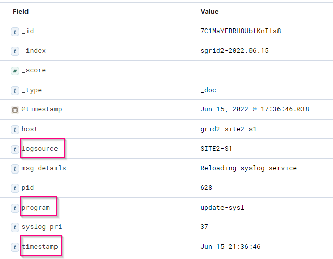

Solicitar cambios en el documento
Solicitar cambios en el documento Editar en GitHub
Editar en GitHub Guía del colaborador
Guía del colaboradorAnálisis de registros de StorageGRID mediante pila ELK
Colaboradores
Con la función syslog Forward de StorageGRID 11.6, es posible configurar un servidor de syslog externo para recopilar y analizar mensajes de registro de StorageGRID. ELK (Elasticsearch, Logstash, Kibana) se ha convertido en una de las soluciones de análisis de registros más populares. Vea el "Análisis de registros de StorageGRID mediante vídeo ELK" Para ver una configuración DE EJEMPLO DE ELK y cómo se puede utilizar para identificar y solucionar las solicitudes fallidas de S3. Este artículo proporciona archivos de ejemplo de configuración de Logstash, consultas de Kibana, gráficos y panel para ofrecerle un inicio rápido para la gestión de registros y análisis de StorageGRID.
Requisitos
-
StorageGRID 11.6.0.2 o superior
-
ELK (Elasticsearch, Logstash y Kibana) 7.1x o superior instalado y en funcionamiento
Archivos de ejemplo
-
"Descargue el paquete de archivos de ejemplo Logstash 7.x." + md5 checksum 148c23d0021d9a4bb4a6c0287464deab + sha256 checksum f51ec9e2e3f842d5a7861566b167a561b4373b4e7bb3c8b3b3b3b3b3b3b3b3b3b3b3b3b3b3b3b3b3b3b5
-
"Descargue el paquete de archivos de ejemplo Logstash 8.x." + md5 checksum e11bae3a662f87c310ef363d0fe06835 + sha256 checksum 5c670755742cfdfd5aa7a596ba087e0153a65bcaef3934afdb682f6cd1278d
Suposición
Los lectores están familiarizados con la terminología y las operaciones de StorageGRID y ELK.
Instrucción
Se proporcionan dos versiones de ejemplo debido a diferencias en los nombres definidos por patrones de gruñido. + por ejemplo, el patrón de grok SYSLOGBASE en el archivo de configuración Logstash define los nombres de campo de forma diferente dependiendo de la versión de Logstash instalada.
match => {"message" => '<%{POSINT:syslog_pri}>%{SYSLOGBASE} %{GREEDYDATA:msg-details}'}
Muestra de Logstash 7.17

Muestra de Logstash 8.23

-
Pasos*
-
Descomprima el ejemplo proporcionado en función de la versión DE ELK instalada. + la carpeta de ejemplo incluye dos muestras de configuración de Logstash: + sglog-2-file.conf: este archivo de configuración envía mensajes de registro StorageGRID a un archivo en Logstash sin transformación de datos. Puede utilizar esta opción para confirmar que Logstash recibe mensajes de StorageGRID o para comprender los patrones de registro de StorageGRID. + sglog-2-es.conf: este archivo de configuración transforma los mensajes de registro StorageGRID utilizando varios patrones y filtros. Incluye ejemplos de sentencias DROP, que devuelven mensajes basados en patrones o filtros. La salida se envía a Elasticsearch para indizar. + Personalice el archivo de configuración seleccionado de acuerdo con la instrucción dentro del archivo.
-
Pruebe el archivo de configuración personalizado:
/usr/share/logstash/bin/logstash --config.test_and_exit -f <config-file-path/file>
Si la última línea devuelta es similar a la siguiente, el archivo de configuración no tiene errores de sintaxis:
[LogStash::Runner] runner - Using config.test_and_exit mode. Config Validation Result: OK. Exiting Logstash
-
Copie el archivo conf personalizado en la configuración del servidor Logstash: /Etc/logstash/conf.d + Si no ha habilitado config.reload.automatic en /etc/logstash/logstash.yml, reinicie el servicio Logstash. De lo contrario, espere a que transcurra el intervalo de recarga de la configuración.
grep reload /etc/logstash/logstash.yml # Periodically check if the configuration has changed and reload the pipeline config.reload.automatic: true config.reload.interval: 5s
-
Compruebe /var/log/logstash/logstash-plain.log y confirme que no hay errores al iniciar Logstash con el nuevo archivo de configuración.
-
Confirme que el puerto TCP se ha iniciado y que está escuchando. + en este ejemplo, se utiliza el puerto TCP 5000.
netstat -ntpa | grep 5000 tcp6 0 0 :::5000 :::* LISTEN 25744/java
-
Desde la interfaz gráfica de usuario del administrador StorageGRID, configure el servidor de syslog externo para que envíe mensajes de registro a Logstash. Consulte la "vídeo de demostración" para obtener más detalles.
-
Debe configurar o deshabilitar el firewall en el servidor Logstash para permitir la conexión de nodos StorageGRID al puerto TCP definido.
-
En la interfaz gráfica de usuario de Kibana, seleccione Management → Dev Tools. En la página Console, ejecute este comando GET para confirmar que se han creado nuevos índices en Elasticsearch.
GET /_cat/indices/*?v=true&s=index
-
Desde la GUI de Kibana, cree un patrón de índice (ELK 7.x) o una vista de datos (ELK 8.x).
-
En la GUI de Kibana, escriba "objetos afeitados" en el cuadro de búsqueda que se encuentra en el centro superior. + en la página objetos guardados, seleccione Importar. En Opciones de importación, seleccione "solicitar acción en conflicto"

Importe eleLIMPORT <version>-QUERY-chart-sample.ndjson. + cuando se le solicite que resuelva el conflicto, seleccione el patrón de índice o la vista de datos que creó en el paso 8.

Se importan los siguientes objetos de Kibana: + Consulta + * audit-msg-s3rq-orlm + * mensajes relacionados con bycast log s3 + * advertencia de nivel de registro o superior + * evento de seguridad fallido + Gráfico + * las solicitudes s3 cuentan en función de bycast.log + * código de estado HTTP + * desglose de msg de auditoría por tipo + * respuesta media de s3 Tiempo + Panel + * panel de solicitudes S3 utilizando los gráficos anteriores.
-
Ahora está listo para realizar el análisis de registros de StorageGRID con Kibana.